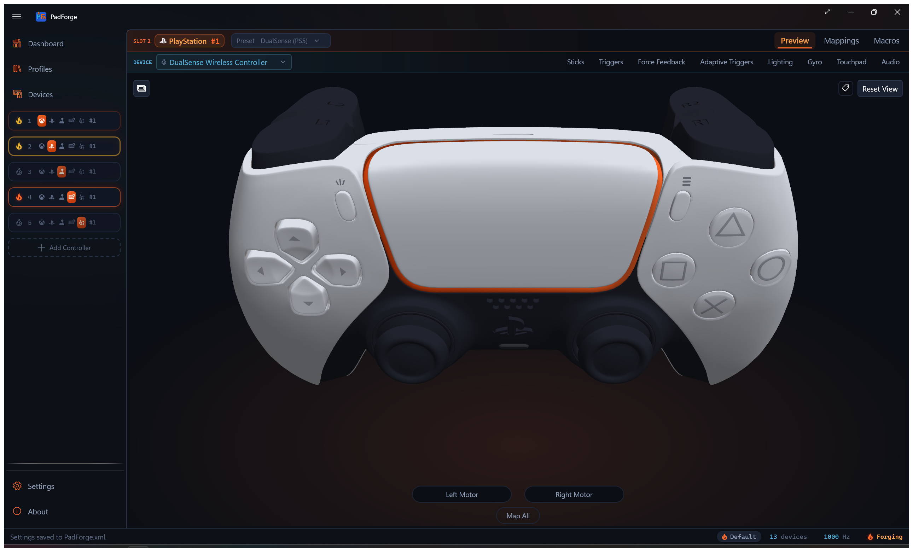
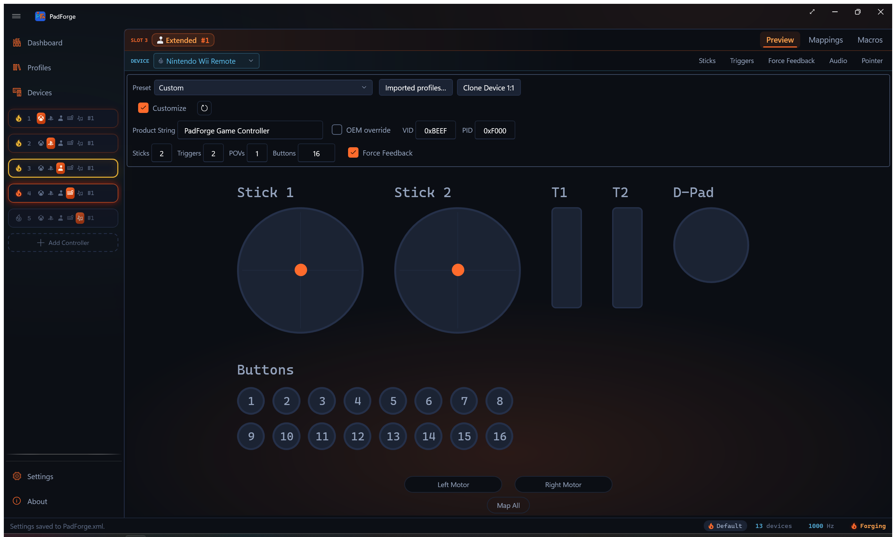
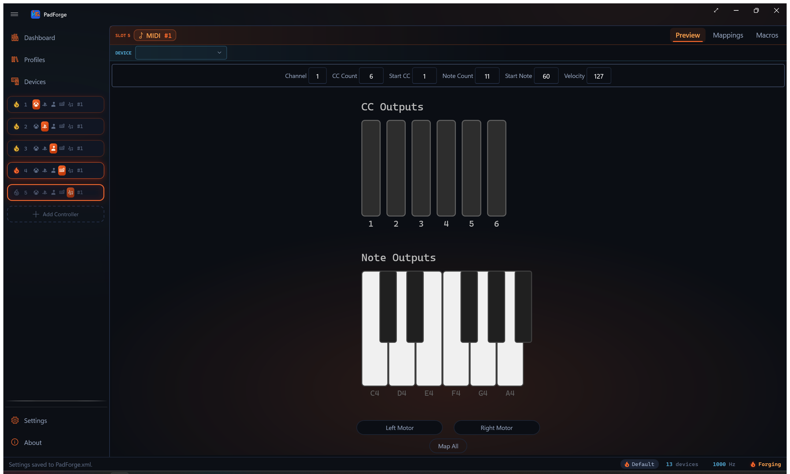
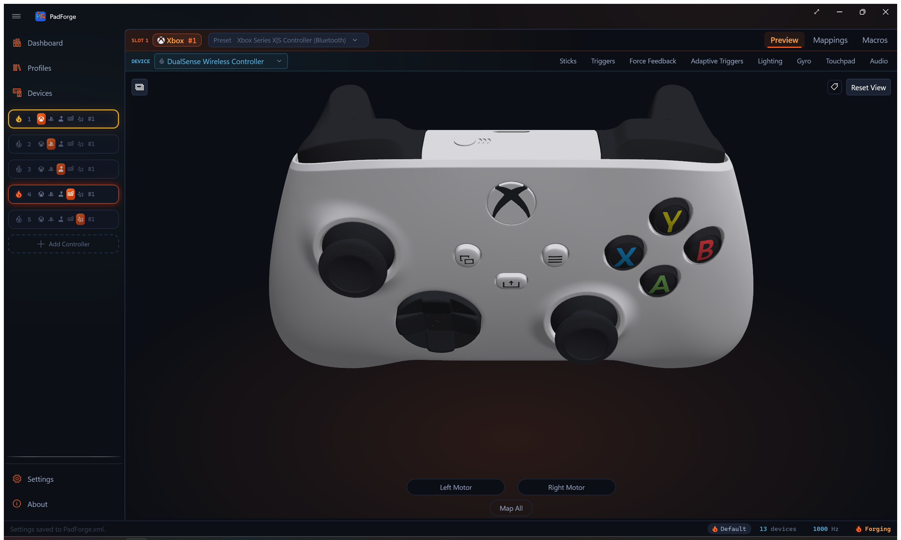

Controller Slots¶
A slot is a virtual controller PadForge creates. The game sees it as a real, separate pad. Up to 16 slots in any mix of types.
What a slot owns¶
Each slot has its own:
- Controller type (Xbox, PlayStation, Extended, Keyboard+Mouse, MIDI)
- Button and Axis Mappings (multi-source rows, shift layers, cross-device chords, custom formulas)
- Stick Deadzones and Trigger Deadzones
- Force Feedback / rumble settings, including audio bass rumble
- Impulse Triggers (Xbox One / Elite / Series sources, routed to DualSense as AT Vibration)
- Adaptive Triggers (DualSense / DualSense Edge)
- Lighting (DualSense / DualSense Edge / DualShock 4 lightbar, and Guide button LED brightness for Xbox One / Elite / Series pads and the 2015 Steam Controller)
- Gyro tuning, calibration, engage gates, and Motion Passthrough
- Touchpad outputs (stick / D-pad / mouse) and gesture engine
- Controller Audio (speaker passthrough, macro sounds, volume)
- Macros
- Shift Layers
The Pad page Copy / Paste / Copy From operations carry every per-device tuning on this list along with the mapping table. See Button and Axis Mappings for the matching rules.
Add a controller¶
Open the Add Controller popup from either spot:
- Dashboard. Click the Add Controller card at the bottom of the controller list.
- Sidebar. Click the + button in the controller section.
Pick the type you want.

Type buttons¶
| Button | Creates |
|---|---|
| Xbox icon | Xbox virtual controller (needs HIDMaestro) |
| PlayStation icon | PlayStation virtual controller (needs HIDMaestro) |
| Joystick icon | Extended DirectInput joystick (needs HIDMaestro) |
| Keyboard icon | Keyboard+Mouse output (no driver) |
| Musical note icon | MIDI output device (needs Windows MIDI Services) |
Dimmed buttons¶
A type button shows faded when:
- Type at capacity. The cursor turns into a "no" icon. The tooltip shows the cap.
- MIDI without Windows MIDI Services. Only the MIDI button dims when its driver is missing. The tooltip says it needs Windows MIDI Services. The Xbox, PlayStation, and Extended buttons do not dim for a missing driver. See Driver Management.
The Add Controller card disappears when all 16 slots are in use or every type is at capacity.
Pick a type¶
Pick the type when you create the slot. You can also switch an existing slot's type by clicking the type icons on its Dashboard card.
Xbox¶
The default. 2 sticks, 2 triggers, 1 D-Pad, 11 buttons. HIDMaestro-backed. Almost every PC game with controller support reads Xbox-style input natively, so this is what to pick when you do not know what to pick.
PlayStation¶
HIDMaestro-backed. 2 sticks, 2 triggers, 1 D-Pad, 14 buttons. The slot ships as a DualShock 4. Switch to DualShock 3, DualSense, or DualSense Edge from the slot's profile picker. Pick this type for PlayStation PC ports with Circle / Cross / Triangle / Square prompts, emulators that need touchpad or lightbar, or motion streaming through the DSU Motion Server.

Extended (HIDMaestro)¶
A customizable virtual joystick. Up to 8 axes, 128 buttons, 4 POV hats. The slot's configuration bar sets how many of each the device exposes and picks one of HIDMaestro's 225+ device profiles (HOTAS, wheels, third-party gamepads). The DirectInput device name Windows reports comes from the active profile. A schematic view shows the live HID layout.
Sim titles (DCS World, MSFS, X-Plane, iRacing) read DirectInput best. Extended slots also deliver force feedback to sim titles that support it.

Keyboard+Mouse¶
No driver. Always available. Sends keyboard and mouse input to Windows instead of emulating a gamepad. Map buttons to keys, sticks to mouse movement, triggers to scroll. Good for older PC games without controller support, accessibility setups where a gamepad is easier to hold than a keyboard, and desktop or non-game use. An interactive keyboard-and-mouse preview lights up in real time as you press buttons.
A SOCD / Snap Tap cleaning bar sits on Keyboard+Mouse slots. It decides what to send when two opposing keys (like left and right) are held at once: off, neutral, last input wins, or first input wins. Add your own key pairs to clean. This keeps fighting-game and platformer inputs legal on keyboard.

MIDI¶
Backed by Windows MIDI Services. Axes send Control Change (CC) messages. Buttons send Note On / Note Off. A configuration bar on the slot's page sets channel, CC count, note count, starting CC and note numbers, and velocity. Creates a system-wide virtual MIDI device with no third-party loopback software needed. Turn any gamepad into a MIDI controller for DAWs (Ableton Live, FL Studio, Reaper), VJ software, or stage lighting.

Note: You can switch any slot to MIDI and back to a gamepad type. Switching to MIDI needs Windows MIDI Services installed. Each switch re-runs auto-mapping for the new type.
Quick type reference¶
| Situation | Recommended type |
|---|---|
| Steam, Epic, or Microsoft Store game (Elden Ring, Forza, Halo, etc.) | Xbox |
| PlayStation PC port with PS button prompts | PlayStation |
| Streaming gyro/motion to Cemu, Yuzu, or another emulator | PlayStation + DSU |
| Flight sim, racing sim, or space sim | Extended |
| HOTAS, racing wheel, or custom button box | Extended |
| Game with keyboard+mouse only | Keyboard+Mouse |
| Accessibility or desktop use | Keyboard+Mouse |
| DAW, VJ software, or stage lighting | MIDI |
| Not sure | Xbox |
When in doubt, start with Xbox. It has the widest game support and you can switch later.
Slot limits¶
Up to 16 slots total across all types. Any mix is allowed within each type's own cap.
Per-type limits¶
| Type | Max slots | Reason |
|---|---|---|
| Xbox | 16 | HIDMaestro creates all 16. XInput games see only the first 4. SDL/DirectInput games see all 16. |
| PlayStation | 16 | HIDMaestro creates all 16. SDL/DirectInput games see all of them. |
| Extended | 16 | HIDMaestro per-type cap, same as the other gamepad types. |
| Keyboard+Mouse | 16 | Capped at the overall slot count. |
| MIDI | 16 | Capped at the overall slot count. |
Most users need 1 to 4 slots. The 16-slot cap covers arcade cabinets, sim rigs, and multi-output MIDI stations.
XInput 4-slot visibility limit¶
The Windows XInput API only exposes 4 Xbox-type controllers. This is a Windows limit, not a PadForge one.
- 4 or fewer Xbox slots. Every game sees all of them.
- More than 4 Xbox slots. All 16 exist and work. XInput games detect only the first 4. SDL, DirectInput, and raw HID games see all 16.
- PlayStation slots are unaffected by the XInput cap.
- Extended, Keyboard+Mouse, and MIDI slots are unaffected.
Tip: For more than 4 local-multiplayer gamepads, mix Xbox and PlayStation slots, or use Extended (no 4-controller cap).
DSU/Cemuhook 4-slot limit¶
The DSU/Cemuhook motion protocol supports a maximum of 4 slots. Only the first 4 broadcast motion data. Slots 5 to 16 work normally for gamepad output but skip DSU. This is a protocol limit.
Enable, disable, delete¶
Enable and disable¶
Each slot has a power button (circle icon on the left of its Dashboard card). Click to toggle on or off.
| Color | Meaning |
|---|---|
| Green | Active and visible to games. Stays green during the inactivity grace period (no inputs for the inactivity timeout, default 60 seconds, set on the Settings page, 0 disables it). |
| Red | Off. Games cannot see it. Settings are kept. |
| Yellow | Enabled but blocked. No devices assigned, driver missing, engine stopped, or the inactivity timeout fired and the virtual controller has been torn down. The slot config itself is kept. Plugging a device back in rebuilds the virtual controller. |
Disabling a slot hides it from games without losing config.
Delete¶
Click the X on a slot's Dashboard card or next to its name in the sidebar.
- The virtual controller is removed from the system.
- All settings (mappings, deadzones, macros) are permanently deleted.
- Physical devices are unassigned from this slot only.
- Remaining slots shift down. Deleting slot 2 of four renumbers slots 3 and 4 to 2 and 3.
Tip: To hide a controller temporarily without losing settings, disable the slot instead.
Reorder slots¶
Drag and drop controller cards on the Dashboard or sidebar entries to change slot order.
How to reorder¶
- Click and hold a controller card or sidebar entry.
- Drag it to the spot you want.
- Release.
Why order matters¶
Slot order sets the controller number. Controller 1 is whichever slot is first. Games assign player numbers based on this order. Emulators bind slots to player ports.
What happens on reorder¶
Reordering two slots of the same type does not disconnect the game, as long as both use the same controller preset. The swap is instant and the game keeps seeing both controllers.
- Same preset on both moved slots. No rebuild. The game notices nothing.
- Different presets. Only the positions whose preset changed rebuild and reconnect at their new spot. Slots that kept their preset stay connected.
- Disabled or no-device slots. Invisible to games. Moving them changes nothing until a device comes back.
Automatic type grouping¶
New slots group by type. Xbox first, then PlayStation, Extended, Keyboard+Mouse, MIDI. This keeps XInput numbering predictable.
You can override the grouping by dragging slots by hand.
Open a slot¶
Click a controller card on the Dashboard or its sidebar entry. The slot's config page opens with a row of tabs.

Three tabs are always there:
- 3D and 2D Visualization: live interactive controller view.
- Button and Axis Mappings: maps physical inputs to virtual outputs, with shift layers.
- Macros: combo triggers and action sequences.
The rest appear based on the physical device selected in the slot's device dropdown, not the slot's output type. Assign a DualSense to a PlayStation slot and the Adaptive Triggers tab appears. Assign a DualShock 4 to the same slot and it does not, because the DualShock 4 has no adaptive triggers. Switch the device dropdown and the tabs follow the newly selected device.
| Tab | Appears for |
|---|---|
| Stick Deadzones | every slot except MIDI (gated by slot type, not the device) |
| Trigger Deadzones | every slot except Keyboard+Mouse and MIDI (gated by slot type, not the device) |
| Force Feedback | a stick-class input (hidden for keyboard, mouse, touchpad, and MIDI) |
| Gyro | a gyro sensor |
| Impulse Triggers | Xbox One / Elite / Series trigger motors |
| Adaptive Triggers | a DualSense or DualSense Edge |
| Lighting | a lightbar (DualSense family, DualShock 4) or a Guide LED (Xbox One / Elite / Series, 2015 Steam Controller) |
| Touchpad | a touchpad (DualShock 4, DualSense, Steam Controller) |
| Controller Audio | a speaker (DualSense family, DualShock 4, Wii Remote), or a haptic actuator that plays macro sounds as tones (Nintendo Switch Joy-Con and Pro Controller, Steam Controller) |
| Wheel | a racing wheel (rotation range, auto-center, RPM shift LEDs) |
| Pointer | an IR camera ([Wii Remote](../devices/wii-controllers.md)) |
| Mouse | a mouse (per-device mouse-gesture settings) |
Keyboard+Mouse slots keep the Stick Deadzones tab for mapping the sticks to mouse movement and scroll. MIDI slots hide the stick and trigger tabs, since a MIDI slot maps to CC and note values, not sticks and triggers.
Multi-slot device assignment¶
One physical controller can feed multiple slots at once.
Use cases¶
- Split output. One controller drives an Xbox slot (for the game) and a MIDI slot (for music) at the same time.
- Mirrored output. Same controller into two Xbox slots so two in-game characters move identically.
- Sim rigs. Route one HOTAS to multiple Extended slots with different axis configs.
How to assign¶
- Devices page. Each device card shows numbered slot toggles. Click a number to assign or unassign.
- Sidebar. Drag a device onto a sidebar controller entry.
Each slot-device pairing has its own mappings, deadzones, and settings. The same controller in slot 1 and slot 3 can have completely different configs.
Related pages¶
- Dashboard: virtual controller cards and engine status.
- Devices: assign physical controllers to slots.
- Installation: first-time setup and driver install.
- Profiles: save and switch slot configs per game.
- Button and Axis Mappings: map physical inputs to virtual outputs, with shift layers.
- Shift Layers: per-slot overlay mapping tables.
- Macros: button combo triggers, axis triggers, and Custom Expression triggers.
- Stick Deadzones and Trigger Deadzones: stick and trigger tuning.
- Force Feedback and Impulse Triggers: body-rumble and trigger-motor effects.
- Adaptive Triggers and Lighting: DualSense-specific effects.
- Touchpad and Controller Audio: touchpad gestures and speaker output.
- Gyro: motion-sensor mapping.
- Wheel: native force-feedback wheel settings.
- Driver Management: driver requirements per controller type.
Last updated for PadForge 4.0.0.